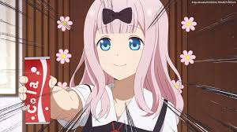

Kaguya-sama: Love is War
Kaguya-sama: Love is War é um anime japonês baseado no mangá de comédia romântica escrito e ilustrado por Aka Akasaka. A história gira em torno de Kaguya Shinomiya e Miyuki Shirogane, membros do prestigioso conselho estudantil da Academia Shuchiin.
O anime é conhecido por seu humor inteligente e pelas batalhas psicológicas entre os dois personagens principais, que tentam fazer com que o outro confesse seu amor primeiro.
A primeira temporada do anime possui 12 episódios, explorando diferentes situações e estratégias elaboradas por Kaguya e Miyuki.
Kaguya Shinomiya
Kaguya é a vice-presidente do conselho estudantil, filha de uma família rica e extremamente inteligente. Ela é conhecida por sua beleza e por sua habilidade em estratégia.
Miyuki Shirogane
Miyuki é o presidente do conselho estudantil, de origem humilde, mas com habilidades acadêmicas excepcionais. Ele é admirado por sua dedicação e inteligência.
.jpg)
Chika Fujiwara
Chika é a secretária do conselho estudantil, uma garota animada e alegre. Ela traz um alívio cômico à série com seu comportamento imprevisível.
